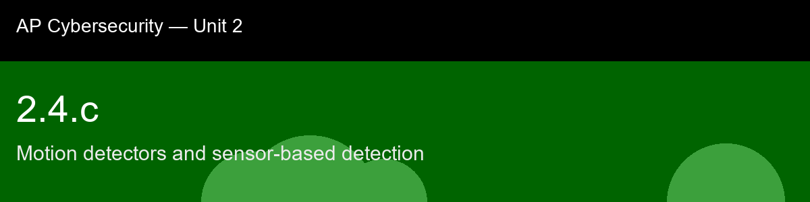

2.4.c recap, Motion detectors and sensor-based detection
Nice work today. Here's what to lock in:
- Recap handout:
post-lecture-handout.docx
- Simulation: SimLab
- Self-check quiz: due before next class
The big picture: Dual-technology sensors are this skill's best worked example of a principle worth generalizing across the whole course: two independent detectors are dramatically stronger together than either is alone, precisely because their false-positive causes don't overlap. Sunlight fools a PIR element but produces no Doppler shift; HVAC airflow fools a microwave element but produces no meaningful heat delta. Requiring both to agree (AND-logic) filters out almost every nuisance trigger that would fool either one individually, the same cross-zone-verification idea from alarm systems, one atom earlier, just implemented inside a single sensor housing instead of across a room. And the misconception about sensitivity is worth remembering on its own: cranking sensitivity to maximum doesn't make a system more secure, it makes it noisier, and a system that cries wolf constantly is a system whose real alerts eventually get ignored, alarm fatigue is a security failure, not a technical inconvenience.
Key terms to lock in:
- Passive infrared (PIR) sensor, a motion sensor that detects a change in infrared (heat) radiation across segments of its field of view, without emitting any energy itself.
- Doppler shift, the change in frequency of a reflected wave (microwave or ultrasonic) caused by a moving object, used by active sensors to detect motion.
- Dual-technology sensor, a sensor combining two detection technologies (typically PIR + microwave) that must both trigger together (AND-logic) before an alert fires, reducing false positives.
- Detection cone / coverage pattern, the limited field of view a motion sensor can actually see; anything outside it, or behind an obstruction, is a blind spot.
- Sensitivity tuning, adjusting a sensor's trigger threshold to trade off missed detections (too insensitive) against false-positive alerts (too sensitive).
- Zoned / layered detection, deploying multiple sensors across distinct perimeter and interior zones with overlapping coverage, so an alert both localizes an intrusion and provides defense in depth if one layer is bypassed.
Common misconceptions -- don't fall for these:
- "A motion sensor sees everything in the room." → Motion sensors have a limited detection cone and blind spots just like cameras; furniture, doorways, and mounting angle can all hide an intruder's movement from a single sensor.
- "Higher sensitivity is always better security." → Sensitivity is a tradeoff, not a one-directional dial: maximum sensitivity catches pets, insects, HVAC airflow, and sunlight glare as false positives, which trains staff to ignore alerts (alarm fatigue) and can get a sensor's alerts deprioritized or disabled entirely, the opposite of better security.
Learning objective(s): 2.4.B, 2.4.C

## 2.4.c recap, Motion detectors and sensor-based detection
Nice work today. Here's what to lock in:
- Recap handout: `post-lecture-handout.docx`
- Simulation: SimLab
- Self-check quiz: due before next class
**The big picture:** Dual-technology sensors are this skill's best worked example of a principle worth generalizing across the whole course: two independent detectors are dramatically stronger together than either is alone, precisely *because* their false-positive causes don't overlap. Sunlight fools a PIR element but produces no Doppler shift; HVAC airflow fools a microwave element but produces no meaningful heat delta. Requiring both to agree (AND-logic) filters out almost every nuisance trigger that would fool either one individually, the same cross-zone-verification idea from alarm systems, one atom earlier, just implemented inside a single sensor housing instead of across a room. And the misconception about sensitivity is worth remembering on its own: cranking sensitivity to maximum doesn't make a system more secure, it makes it noisier, and a system that cries wolf constantly is a system whose real alerts eventually get ignored, alarm fatigue is a security failure, not a technical inconvenience.
**Key terms to lock in:**
- **Passive infrared (PIR) sensor**, a motion sensor that detects a *change* in infrared (heat) radiation across segments of its field of view, without emitting any energy itself.
- **Doppler shift**, the change in frequency of a reflected wave (microwave or ultrasonic) caused by a moving object, used by active sensors to detect motion.
- **Dual-technology sensor**, a sensor combining two detection technologies (typically PIR + microwave) that must both trigger together (AND-logic) before an alert fires, reducing false positives.
- **Detection cone / coverage pattern**, the limited field of view a motion sensor can actually see; anything outside it, or behind an obstruction, is a blind spot.
- **Sensitivity tuning**, adjusting a sensor's trigger threshold to trade off missed detections (too insensitive) against false-positive alerts (too sensitive).
- **Zoned / layered detection**, deploying multiple sensors across distinct perimeter and interior zones with overlapping coverage, so an alert both localizes an intrusion and provides defense in depth if one layer is bypassed.
**Common misconceptions -- don't fall for these:**
- "A motion sensor sees everything in the room." → Motion sensors have a limited detection cone and blind spots just like cameras; furniture, doorways, and mounting angle can all hide an intruder's movement from a single sensor.
- "Higher sensitivity is always better security." → Sensitivity is a tradeoff, not a one-directional dial: maximum sensitivity catches pets, insects, HVAC airflow, and sunlight glare as false positives, which trains staff to ignore alerts (alarm fatigue) and can get a sensor's alerts deprioritized or disabled entirely, the opposite of better security.
**Learning objective(s):** 2.4.B, 2.4.C